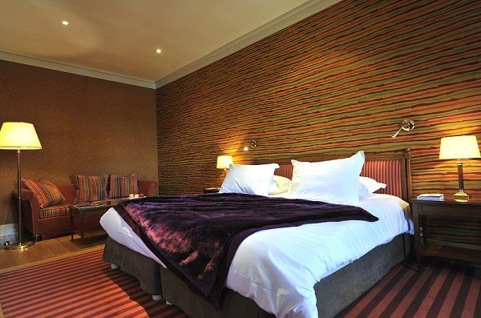
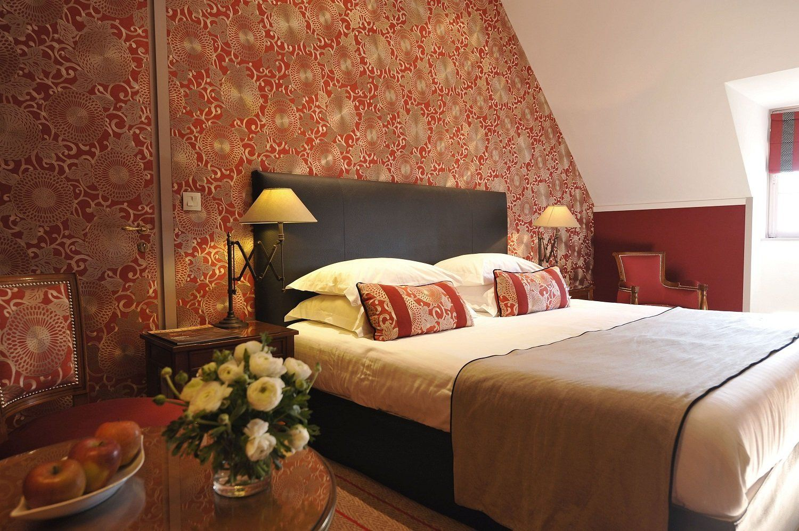
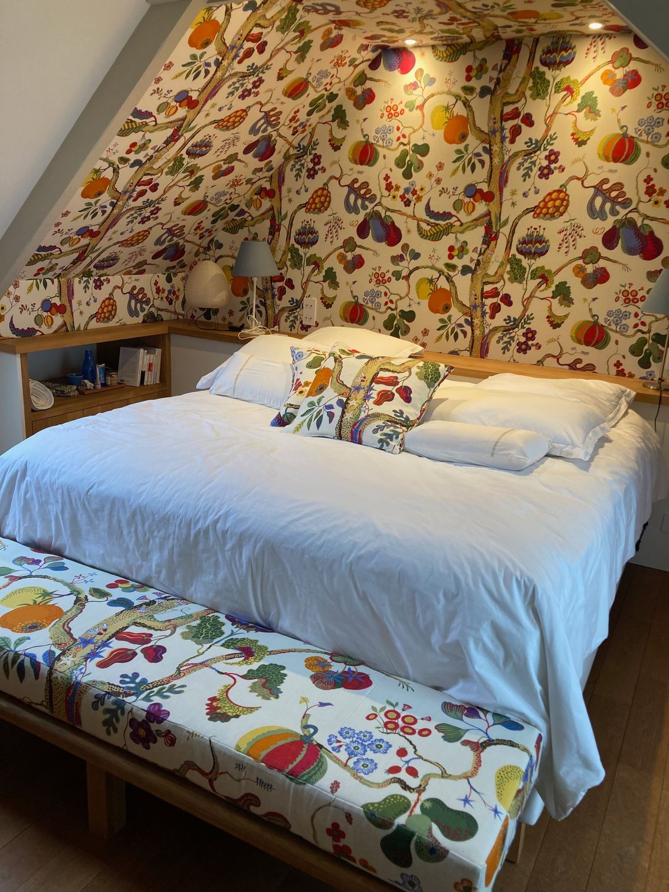
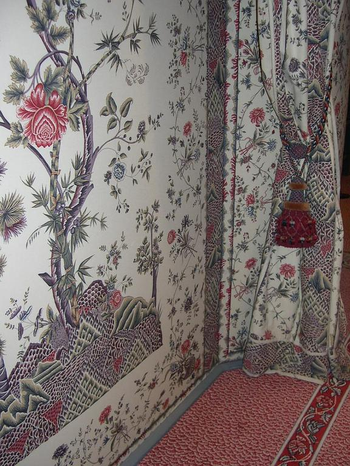
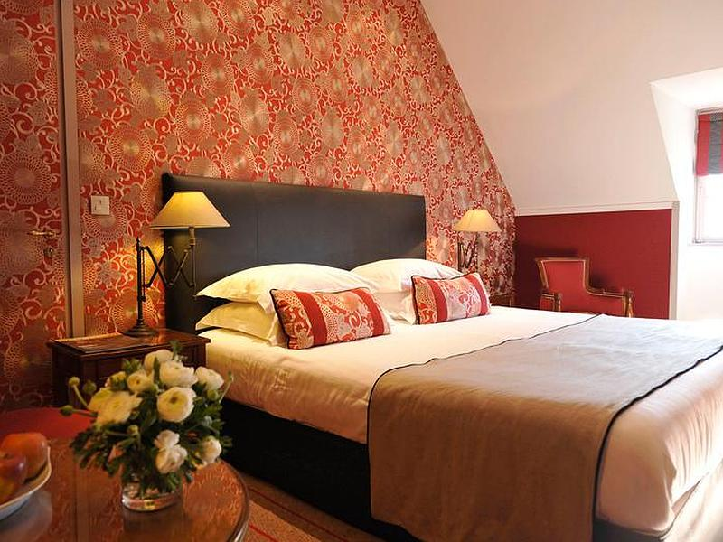
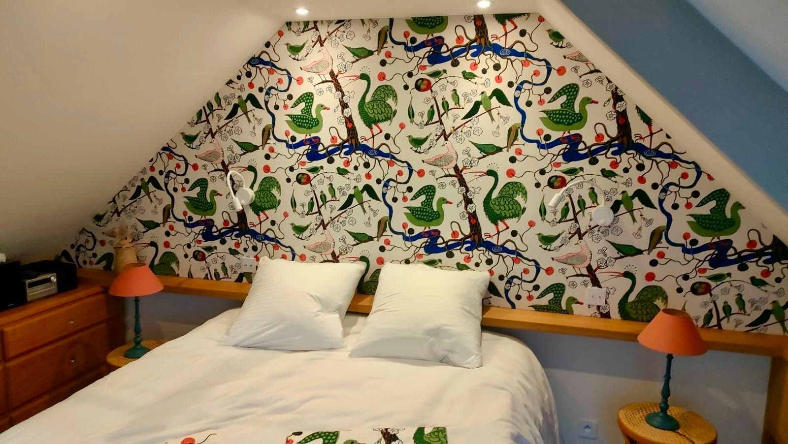

Tentures murales
Pose de tissus tendus
Conception et réalisation de vos tentures murales.
Conseils personnalisés
Habiller vos murs de tissu
Depuis plus de 30 ans, nous mettons notre savoir-faire et nos talents au service de la décoration de votre intérieur. Au sein de nos ateliers situés à Campbon, entre Nantes et La Baule, nous confectionnons des tentures murales pour habiller les murs des maisons, des appartements et des chambres d'hôtels.


Un style unique
Un tissu tendu pour habiller vos murs avec du style
La tradition de la tenture murale remonte à l'Antiquité. À l'époque, les tentures murales habillaient les murs des habitations bourgeoises. Elles étaient représentatives d'un signe de valeur sociale. Un temps délaissé, le tissu tendu est aujourd'hui un élément de décoration d'intérieur très tendance. Il apporte une touche de raffinement et donne du cachet à une chambre ou à un salon.
- Contribue à l'isolation phonique et thermique d'une habitation
- Camoufle les imperfections d'un mur
Création d'ambiance
Des décors textiles à suspendre aux murs
Vous êtes à la recherche d'une décoration d'intérieur unique et originale ? Telle une œuvre d'art, la tenture murale vous fera vivre une véritable expérience sensorielle. Vous souhaitez nous confier la pose d'une tenture murale qui soit le reflet de votre personnalité ? Contactez-nous, afin que nous étudiions ensemble votre projet.

Nos réalisations
Des murs habillés de tissu



Envie de succomber aux tentures murales ?
Offrez à vos murs un habillage textile raffiné, unique et isolant. Contactez l'atelier pour étudier ensemble votre projet de tissu tendu.